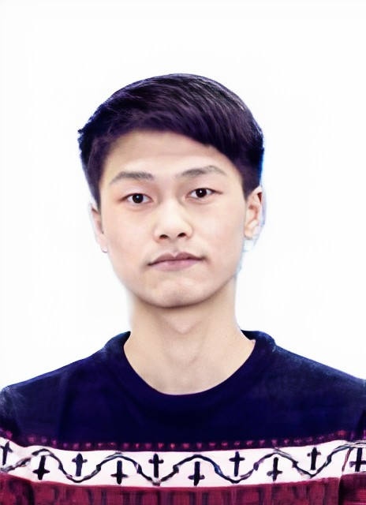
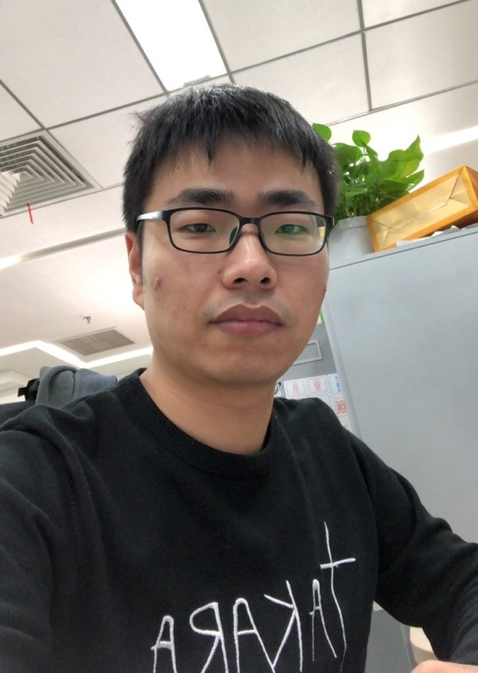
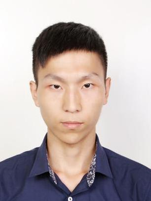

Education
| • 09/2005-07/2010 | Ph.D., Pattern Recognition and Intelligent System, University of Science and Technology of China (USTC) |
| • 09/2001-07/2005 | B.Eng., Automation, University of Science and Technology of China (USTC) |
[↑TOP]
Experience
| • 07/2017-now | Professor, Northwestern Polytechnical University, China |
| • 01/2014-06/2017 | Associate Professor, Northwestern Polytechnical University, China |
| • 10/2010-12/2013 | Post-doctor, Xi'an Institute of Optics and Precision Mechanics, Chinese Academy of Sciences, China |
[↑TOP]
Research Interests
Computer vision, pattern recognition, machine learning methods and their related applications particularly in video surveillance, intelligent transportation system, remote sensing and multimedia analysis.
[↑TOP]
Selected / Full Journal Publications
[↑TOP]
Selected Conference Publications
- AWFA-LPD: Adaptive Weight Feature Aggregation for Multi-frame License Plate Detection Proc. ACM International Conference on Multimedia Retrieval (ICMR) 2021
- Road Extraction from Satellite Image via Auxiliary Road Location Prediction Proc. IEEE International Geoscience and Remote Sensing Symposium (IGARSS) 2021. Oral
- Spatial-spectral Hyperspectral Image Classification via Multiple Random Anchor Graphs Ensemble Learning Proc. IEEE International Geoscience and Remote Sensing Symposium (IGARSS) 2021
- Hyperspectral Image Super-Resolution via Multi-Domain Feature Learning Proc. IEEE International Geoscience and Remote Sensing Symposium (IGARSS) 2021
- S. Bai, J. Gao, Q. Wang*, and X. Li, “Multi-domain Synchronous Refinement Network for Unsupervised Cross-Domain Person Re-Identification,” Proc. IEEE International Conference on Multimedia and Expo (ICME), 2021. Oral.[PDF]
- Q. Li, Q. Wang*, and X. Li, “Hyperspectral Image Super-Resolution via Adjacent Spectral Fusion Strategy,” Proc. International Conference on Acoustic, Speech, and Signal Processing (ICASSP), pp. 1645-1649, 2021.[PDF]
- Y. Yuan, Q. Wang, and X. Li, “Hyperspectral and Multispectral Image Fusion Using Non-Convex Relaxation Low Rank and Total Variation Regularization,” Proc. IEEE International Geoscience and Remote Sensing Symposium (IGARSS), 2020. [PDF]
- S. Bai, Q. Wang*, and X. Li, “MFI: Multi-range Feature Interchange for Video Action Recognition,” International Conference on Pattern Recognition (ICPR), 2020.[PDF]
- T. Han, J. Gao, Y. Yuan and Q. Wang*, “Unsupervised Semantic Aggregation and Deformable Template Matching for Semi-Supervised Learning,” Proc. Conference on Neural Information Processing Systems (NeurIPS), pp. 9961-9971, 2020.[PDF] [Code]
- C. Zhang, Q. Wang*, and X. Li, “EQ-LPR: Efficient Quality-aware License Plate Recognition,” Proc. IEEE International Conference on Image Processing (ICIP), pp. 653-657, 2020. [PDF]
- Z. Xiong, Y. Yuan, N. Guo and Q. Wang, “Variational Context-Deformable ConvNets for Indoor Semantic Segmentation,” Proc. IEEE Conference on Computer Vision and Pattern Recognition (CVPR), pp. 3991-4001, 2020.[PDF]
- R. Liu, M. Chen, Q. Wang*, and X. Li, “Robust Rank Constrained Sparse Learning: A Graph-Based Method for Clustering,” Proc. International Conference on Acoustic, Speech, and Signal Processing (ICASSP), pp. 4217-4221, 2020. [PDF]
- B. Wei, Y. Yuan, Q. Wang*, and X. Li, “MSPNET: Multi-supervised Parallel Network for Crowd Counting,” Proc. International Conference on Acoustic, Speech, and Signal Processing (ICASSP), pp. 2418-2422, 2020. [PDF]
- W. Su, Y. Yuan, and Q. Wang, “Deep Image Deblurring Using Local Correlation Block,” Proc. International Conference on Acoustic, Speech, and Signal Processing (ICASSP), pp. 1908-1912, 2020. [PDF]
- W. Lin, J. Gao, Q. Wang*, and X. Li, “Pixel-Level Self-Paced Learning for Super-Resolution,” Proc. International Conference on Acoustic, Speech, and Signal Processing (ICASSP), pp. 2538-2542, 2020. [PDF] [Code]
- T. Han, J. Gao, Y. Yuan, and Q. Wang*, “Focus on Semantic Consistency for Cross-Domain Crowd Understanding,” Proc. International Conference on Acoustic, Speech, and Signal Processing (ICASSP), pp. 1848-1852, 2020. Oral. [PDF]
- F. Zhang, Q. Wang*, and X. Li, “Deep Meta-relation Network for Visual Few-Shot Learning,” Proc. International Conference on Acoustic, Speech, and Signal Processing (ICASSP), pp. 1509-1513, 2020. [PDF]
- W. Huang, Z. Xiong, Q. Wang*, and X. Li, “KALM: Key Area Localization Mechanism for Abnormality Detection in Musculoskeletal Radiographs,” Proc. International Conference on Acoustic, Speech, and Signal Processing (ICASSP), pp. 1399-1403, 2020. [PDF]
- H. Li, Y. Yuan, and Q. Wang, “Video Frame Interpolation via Residue Refinement,” Proc. International Conference on Acoustic, Speech, and Signal Processing (ICASSP), pp. 2613-2617, 2020. [PDF] [Code]
- C. Zhang, Q. Wang*, and X. Li, “IQ-STAN: Image Quality Guided Spatio-Temporal Attention Network for License Plate Recognition,” Proc. International Conference on Acoustic, Speech, and Signal Processing (ICASSP), pp. 2268-2272, 2020. [PDF]
- W. Huang, Q. Wang*, and X. Li, “Feature Sparsity in Convolutional Neural Networks for Scene Classification of Remote Sensing Image,” Proc. IEEE International Geoscience and Remote Sensing Symposium (IGARSS), pp. 3017-3020, 2019.[PDF]
- X. Zhang, Q. Wang, S. Chen, and X. Li, “Multi-Scale Cropping Mechanism for Remote Sensing Image Captioning,” Proc. IEEE International Geoscience and Remote Sensing Symposium (IGARSS), pp. 10039-10042, 2019. [PDF]
- Z. Zhang, Q. Wang, and Y. Yuan, “Hyperspectral Unmixing via L1/4 Sparsity-Constrained Multilayer NMF,” Proc. IEEE International Geoscience and Remote Sensing Symposium (IGARSS), pp.2143-2146, 2019. [PDF]
- C. Zhang, Q. Wang*, and X. Li, “A Multi-Task Architecture for Remote Sensing by Joint Scene Classification and Image Quality Assessment,” Proc. IEEE International Geoscience and Remote Sensing Symposium (IGARSS), pp. 10055-10058, 2019. [PDF]
- J. Su, Q. Wang, S. Chen, and X. Li, “An Introspective Learning Strategy for Remote Sensing Scene Classification,” Proc. IEEE International Geoscience and Remote Sensing Symposium (IGARSS), pp. 533-536, 2019. [PDF]
- Q. Wang*, J. Gao, W. Lin, and Y. Yuan, “Learning from Synthetic Data for Crowd Counting in the Wild,” Proc. IEEE Conference on Computer Vision and Pattern Recognition (CVPR), pp. 8190-8199, 2019. [PDF] [Project/Code/Dataset]
- D. Hu, D. Wang, X. Li, F. Nie, and Q. Wang, “Listen to the Image,” Proc. IEEE Conference on Computer Vision and Pattern Recognition (CVPR), pp. 7964-7973, 2019. [PDF]
- C. Wang, Y. Yuan and Q. Wang*, “Learning by Inertia: Self-Supervised Monocular Visual Odometry for Road Vehicles,” Proc. International Conference on Acoustic, Speech and Signal Processing (ICASSP)), pp. 2252-2256, 2019.[PDF]
- Y. Yuan, Z. Xiong, and Q. Wang, “ACM: Adaptive Cross-Modal Graph Convolutional Neural Networks for RGB-D Scene Recognition,” Proc. AAAI Conference on Artificial Intelligence (AAAI), pp. 9176-9184, 2019. Oral.[PDF]
- Y. Yuan, D. Wang, and Q. Wang, “Memory-Augmented Temporal Dynamic Learning for Action Recognition,” Proc. AAAI Conference on Artificial Intelligence (AAAI), pp. 9167-9175, 2019. [PDF]
- S. Liu, Q. Wang*, and X. Li, “Attention Based Network for Remote Sensing Scene Classification,” Proc. IEEE International Geoscience and Remote Sensing Symposium (IGARSS), pp. 4740-4743, 2018. [PDF]
- Z. Xiong, Y. Yuan, and Q. Wang*, “AI-NET: Attention Inception Neural Networks for Hyperspectral Image,” Proc. IEEE International Geoscience and Remote Sensing Symposium (IGARSS), pp. 2647-2650, 2018. [PDF]
- Z. Yuan, Q. Wang*, and X. Li, “Robust PCANet for Hyperspectral Image Change Detection,” Proc. IEEE International Geoscience and Remote Sensing Symposium (IGARSS), pp. 4931-4934, 2018. [PDF]
- F. Zhang, Q. Wang*, and X. Li, “Optimal Neighboring Reconstruction for Hyperspectral Band Selection,” Proc. IEEE International Geoscience and Remote Sensing Symposium (IGARSS), pp. 4709-4712, 2018. [PDF]
- X. He, Q. Wang*, and X. Li, “Spectral-spatial Hyperspectral Image Classification via Locality and Structure Constrained Low-rank Representation,” Proc. IEEE International Geoscience and Remote Sensing Symposium (IGARSS), pp. 5744-5747, 2018. Oral [PDF]
- X. Jiang, L. Zhang, F. Zhang, J. Liu, and Q. Wang*, “Selecting Band Subsets from Hyperspectral Image through a Novel Evolutionary-based Strategy,” Proc. IEEE International Geoscience and Remote Sensing Symposium (IGARSS), pp. 4697-4700, 2018. [PDF]
- M. Jiang, Y. Yuan, and Q. Wang*, “Self-attention Learning for Person Re-identification,” Proc. British Machine Vision Conference (BMVC), 2018. [PDF]
- X. Zhang, Y. Yuan, and Q. Wang*, “ROI-wise Reverse Reweighting Network for Road Marking Detection,” Proc. British Machine Vision Conference (BMVC), 2018. [PDF]
- M. Chen, Q. Wang*, and X. Li, “Robust Adaptive Sparse Learning Method for Graph Clustering,” Proc. IEEE International Conference on Image Processing (ICIP), pp. 1618-1622, 2018. [PDF]
- X. Li, J. Yang, and Q. Wang*, “Nonrigid Points Alignment with Soft-weighted Selection,” Proc. International Joint Conferences on Artificial Intelligence (IJCAI), pp. 800-806, 2018. [PDF]
- Y. Lu, Y. Yuan, and Q. Wang*, “Forward Vehicle Collision Warning Based on Quick Camera Calibration,” Proc. International Conference on Acoustic, Speech and Signal Processing (ICASSP), pp. 2586-2590, 2018. [PDF]
- D. Wang, Y. Yuan, and Q. Wang*, “Cross-modal Message Passing for Two-stream Fusion,” Proc. International Conference on Acoustic, Speech and Signal Processing (ICASSP), pp. 1268-1272, 2018. [PDF]
- D. Ma, Y. Yuan, and Q. Wang*, “A Sparse Dictionary learning method for Hyperspectral Anomaly Detection with Capped Norm,” Proc. IEEE International Geoscience and Remote Sensing Symposium (IGARSS), pp. 648-651, 2017. [PDF]
- F. Zhang, Q. Wang*, and X. Li, “Hyperspectral Image Band Selection via Global Optimal Clustering,” Proc. IEEE International Geoscience and Remote Sensing Symposium (IGARSS), pp. 1-4, 2017. Oral [PDF]
- Q. Wang, Z. Qin, F. Nie, and Y. Yuan, “Convolutional 2D LDA for Nonlinear Dimensionality Reduction,” Proc. International Joint Conference on Artificial Intelligence (IJCAI), pp. 2929-2935, 2017. Oral [PDF]
- X. Li, M. Chen, F. Nie, and Q. Wang*, “Locality Adaptive Discriminant Analysis,” Proc. International Joint Conference on Artificial Intelligence (IJCAI), pp. 2201-2207, 2017. Oral [PDF]
- Y. Yuan, Z. Jiang, and Q. Wang*, “HDPA: Hierarchical Deep Probability Analysis for Scene Parsing,” Proc. IEEE International Conference on Multimedia and Expo (ICME), pp. 313-318, 2017. [PDF]
- J. Gao, Q. Wang*, and Y. Yuan, “Embedding Structured Contour and Location Prior in Siamesed Fully Convolutional Networks for Road Detection,” Proc. IEEE International Conference on Robotics and Automation (ICRA), pp. 219-224, 2017. [PDF]
- J. Zhang, Y. Yuan, F. Nie, and Q. Wang*, “Largest Center-specific Margin for Dimension Reduction,” Proc. International Conference on Acoustic, Speech and Signal Processing (ICASSP), pp. 2352-2356, 2017. Oral [PDF]
- M. Chen, Q. Wang* and X. Li, “Anchor-Based Group Detection in Crowd Scenes,” Proc. International Conference on Acoustic, Speech and Signal Processing (ICASSP), pp. 1378-1382, 2017. Oral [PDF]
- M. Jiang, Y. Yuan, and Q. Wang*, “Asymmetric Cross-View Dictionary Learning for Person Re-identification,” Proc. International Conference on Acoustic, Speech and Signal Processing (ICASSP), pp. 1228-1232, 2017. Oral [PDF]
- J. Wan, Y. Yuan, and Q. Wang*, “Traffic Congestion Analysis: A New Perspective,” Proc. International Conference on Acoustic, Speech and Signal Processing (ICASSP), pp. 1398-1402, 2017. Oral [PDF] [Dataset Link1 Link2 ]
- X. Li, M. Chen, F. Nie, and Q. Wang*, “A Multiview-based Parameter Free Framework for Group Detection,” Proc. AAAI Conference on Artificial Intelligence (AAAI), pp. 4147-4153, 2017. Oral [PDF]
- Q. Wang, M. Chen, and X. Li, “Quantifying and Detecting Collective Motion by Manifold Learning,” Proc. AAAI Conference on Artificial Intelligence (AAAI), pp. 4292-4298, 2017. Oral [PDF]
- J. Lin, Q. Wang*, and Y. Yuan, “In Defense of Iterated Conditional Mode for Hyperspectral Image Classification,” Proc. IEEE International Conference on Multimedia and Expo (ICME), pp. 1-6, 2014. [PDF]
- Q. Wang, P. Yan, Y. Yuan, and X. Li, “Robust Color Correction in Stereo Vision,” Proc. IEEE International Conference on Image Processing (ICIP), pp. 965-968, 2011. [PDF]
- Q. Wang, X. Sun, and Z. Wang, “A Robust Algorithm for Color Correction between Two Stereo Images,” Proc. Asian Conference on Computer Vision (ACCV), vol. 5996 LNCS, pp. 405-416, 2009. [PDF]
- Q. Wang and Z. Wang, “A Subjective Method for Image Segmentation Evaluation,” Proc. Asian Conference on Computer Vision (ACCV), vol. 5996 LNCS, pp. 53-64, 2009. [PDF]
[↑TOP]
Honors and Awards
| 2020 | Clarivate Highly Cited Researcher |
| 2020 | Elsevier Highly Cited Chinese Researcher |
| 2018 | Springer conference Best Student Paper Award |
| 2017 | IEEE T-GRS Best Reviewer |
| 2014 | IEEE conference Best Paper Award |
| 2014 | IEEE conference Honorable Mention Award |
[↑TOP]
Professional Activities
Editor Board:
Remote Sensing (MDPI), Section Editor-in-Chief
IEEE Transactions on Circuits and Systems for Video Technology (IEEE), Associate Editor
IEEE Transactions on Systems, Man, and Cybernetics: Systems (IEEE), Associate Editor
IEEE Geoscience and Remote Sensing Letters (IEEE), Associate Editor
Pattern Recognition (Elsevier), Associate Editor
Neurocomputing (Elsevier), Associate Editor
Neural Processing Letters (Springer), Associate Editor
Multimedia Tools and Applications (Springer), Editor Board Member
IET Image Processing (IET), Associate Editor
IET Computer Vision (IET), Associate Editor
IEEE Transactions on Industrial Electronics (IEEE), Guest Editor
IEEE Transactions on Intelligent Transportation Systems (IEEE), Lead Guest Editor
IEEE Journal of Selected Topics in Applied Earth Observations and Remote Sensing (IEEE), Guest Editor
Journal of Image and Graphics (中国图象图形学报)，Editorial Board Member
Membership:
BCS Fellow
IET Fellow
IEEE Senior Member
ACM Senior Member
China Computer Federation (CCF) Senior Member
China Society of Image and Graphics (CSIG) Member
Vision And Learning Seminar (VALSE) Online Director Board Member
Program Committee Member (100+ times)：
NIPS, AAAI, IJCAI, CVPR, ICCV, ECCV, BMVC, ICASSP, ACM MM, ACPR...
General Chair：
• The 3rd International Electronic Conference on Remote Sensing
Organizing Committee Member：
• Annual Summit on Artificial Intelligence
Program Co-chair：
• 2015 International Conference on Progress in Informatics and Computing (PIC)
Session/Area Chair：
• 2019 AAAI Conference on Artificial Intelligence (AAAI)
• 2019 International Conference on Image and Graphics (ICIG)
• 2017 AAAI Conference on Artificial Intelligence (AAAI)
• 2017 International Joint Conference on Artificial Intelligence (IJCAI)
Regular Reviewer (40+ journals)：
IJCV, T-PAMI, IEEE T-IP, IEEE T-NNLS, IEEE T-CSVT, IEEE T-CYB, IEEE T-MM, IEEE T-MI, IEEE T-HMS, IEEE T-SMC:S, IEEE T-GRS, IEEE T-STSP, IEEE JSTARS, IEEE T-ITS, PR, CVIU...
[↑TOP]
Grants (20+)
• National Key R&D Program of China
• National Basic Research Program of China (973 Program)
• State Key Program of National Natural Science Foundation of China
• Major Research Plan of National Natural Science Foundation of China
• National Natural Science Foundation of China
• China Postdoctoral Science Foundation
• Natural Science Foundation Research Project of Shaanxi Province
• Open Research Fund of Chinese Academy of Sciences
Projects
My research projects mainly concentrate on three aspects.
| 1. | Vision functions for driver assistance systems and autonomous driving systems. Typical examples include: Lane Departure Warning, Traffic Sign Recognition, Pedestrian Collision Warning, Traffic Light Recognition, Driver Behavior Analysis, and Road Marking Detection and Recognition. |
• Intelligent Driving Systems [Demo Link1 Link2 ]

| 2. | Video surveillance, particularly for security and Intelligent Transportation Systems. Exemplar applications include: Crowd Analysis, Abnormal Detection, Target Tracking/Detection, Action Recognition, Saliency Detection/Image Resizing, Scene Understanding, etc. |
• Crowd Analysis/Abnormal Detection

• Traffic Congestion Calculation

• High Quality Video Resizing

• Licence Plate Recognition

• Scene Understanding

• Unconstrained Identity Verification

| 3. | Image processing, particularly for low level task. Typical examples include: image color correction, image super-resolution, image deblur, etc. |
• Color Correction for Stereo Images

• Image Super-Resolution

• Image Deblur

| 4. | Remote Sensing image analysis, especially for hyperspectral, multispectral and multimodal images. Research towards this direction includes image classification/segmentation/fusion, target detection, abnormal detection, band selection, etc. |

[↑TOP]
Graduates
 Jianwu Fang, Ph.D Chang'an University, Associate Professor (长安大学) |
 Jianan Zhang, Ph.D Hisense (海信) |
 Mulin Chen, Ph.D XIDIAN University, Post Doctor (西安电子科技大学) |
 Dong Wang, Ph.D Oregon State University, Post Doctor (俄勒冈州立大学) |
 Junyu Gao, Ph.D XIDIAN University, Post Doctor (西安电子科技大学) |
Zhitong Xiong, Ph.D Technische Universität München, Post Doctor (慕尼黑工业大学) |
||
 Jianzhe Lin, Master University of British Columbia (英属哥伦比亚大学) |
 Jia Wan, Master City University of Hong Kong (香港城市大学) |
 Zequn Qin, Master Zhejiang University (浙江大学) |
 Zhaotie Meng, Master HIKVISION DIGITAL TECHNOLOGY (海康威视) |
 Xingyu Zhang, Master Longfor Group (北京龙湖集团) |
 Chunbiao Song, Master Huawei Technologies (华为) |
Minyue Jiang, Master Baidu (百度) |
 Xiaoqiang Zhang, Master Baidu (百度) |
 Fukui Yang, Master Baidu (百度) |
 Quanquan Zheng, Master ZTE (中兴) |
 Xiang He, Master Longfor Group (北京龙湖集团) |
 Shaoteng Liu, Master Tencent (腾讯) |
Haopeng Li, Master The University of Melbourne (墨尔本大学) |
 Lulu Hua, Master Huawei Technologies (华为) |
Yuanrong Guo, Master Institute of Space Electronic Technology (航天九院) |
 Fahong Zhang, Master Technische Universität München (慕尼黑工业大学) |
 Zhenghang Yuan, Master Technische Universität München (慕尼黑工业大学) |
 Cong Zhang, Master The Hong Kong Polytechnic University (香港理工大学) |
 Wei Lin, Master City University of Hong Kong (香港城市大学) |
 Wei Huang, Master Technische Universität München (慕尼黑工业大学) |
 Xueting Zhang, Master Technische Universität München (慕尼黑工业大学) |
 Yue Yuan, Master China Airborne Missile Academy (中国空空导弹研究院) |
 Nianhui Guo, Master Hasso-Plattner-Institute (哈索.普拉特纳研究院) |
[↑TOP]